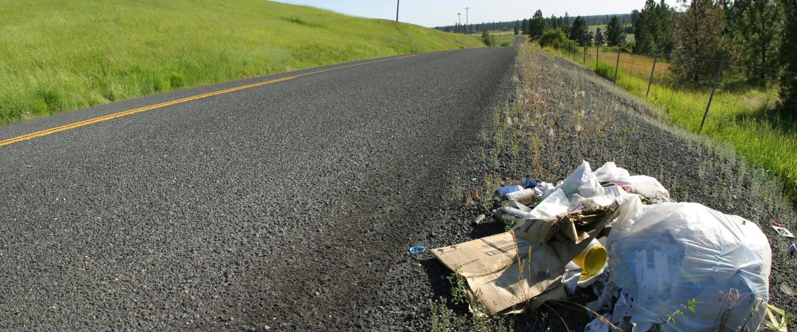
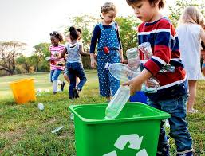
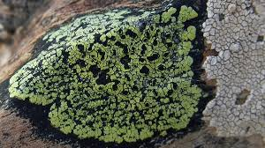
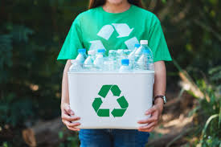
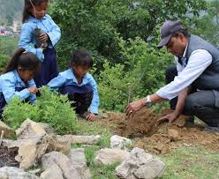

ECO-CLUB
What is eco-club?
Eco-club is a group of people working together contributing to the improvement of environmental conditions in our society. Formation of school based environmental clubs (Eco Clubs) was started since 1994.Eco clubs create a foundation of a generation that is knowledgeable about the environment issues, in tune with nature and aware of the upcoming challenges. Eco-club was establihed to create environmental awareness among the school & college students for environmental improvement. The purpose of the club is to spread awareness of the effects of climate change. Eco-club provides realistic and achievable tips for high schoolers to reduce their carbon footprint.
What is the aim of Eco-club?
The main aim of Eco-club is to improve the environmental condition of our societies. It also focuses on reducing pollution and planting more trees. Eco club aims to inculcat the culture of eco-friendliness and environmental conservation among the students and conduct various Environment Campaigns involving various schools & Colleges.
What does eco club offer?
Eco-club offers programs and activities to encourage others to reduce pollution,plant trees, and more. It also offers us an improved environmental condition. Eco club also offers awareness and sustainable practices related to the environment and related issues.
Eco-clubs present in Nepal and Scotland
Projects of Eco-club
Litter analysis
In litter analysis, all the members go out to collect litters,and waste materials in the surrounding. After collecting all the litter analysis is done. In the analysis, we observe what is the percentage of plastic,paper,and other in the collected litter.

School waste management
In the school management project,we pick up all the papers thrown in a classroom,count it and try to reduce the paper waste in next week. This program is conducted once in a week.

Lichen sighting
In lichen sighting,all the eco club members go outside for lichen sighting and understanding the nature.

style="font-size: 25px;"Recycling plastic materials to make greenhouse
In this activity,we collect plastics in a bottle and after filling up many bottle we make a green house out of it.

Conducting awareness programs
In this activity,either one person must make a video about climate change or we must form a group and protest against environmental pollution.
